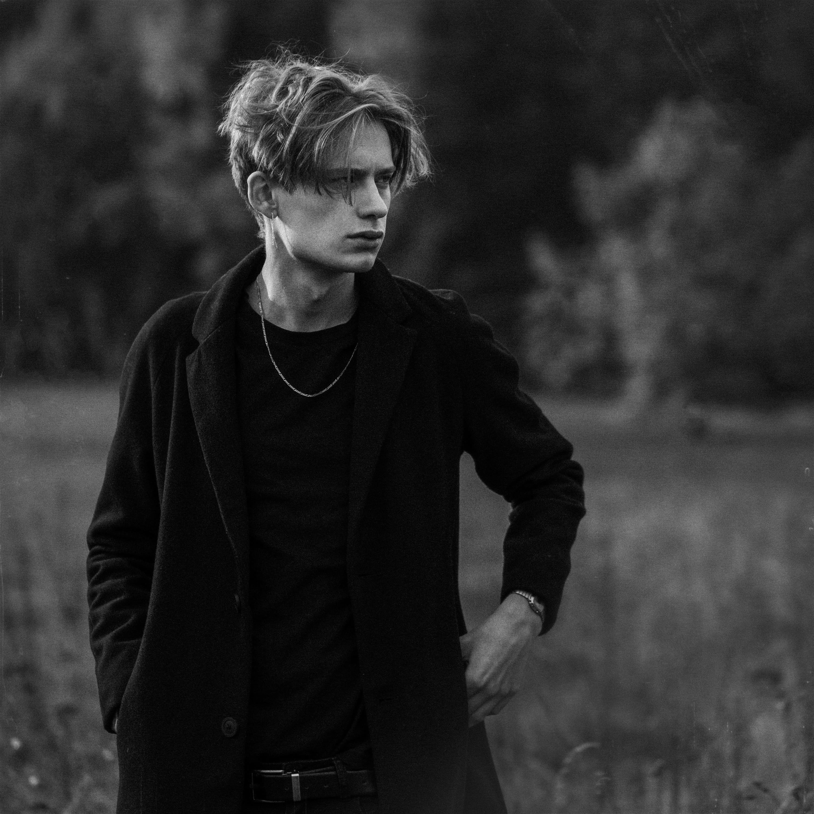

Curriculum Vitae
Szymon Makowski
Specjalista ds. Mediów Społecznościowych & Twórca Treści

Specjalista social media i twórca contentu — wideo, fotografia, grafika — z doświadczeniem w komunikacji cyfrowej i produkcji materiałów od koncepcji po publikację. Zajmuję się również montażem wideo, tworząc spójne narracje wizualne dla marek i projektów, które mają coś do powiedzenia.
Doświadczenie zawodowe
06.2024 — obecnie
Urząd Miasta Bydgoszczy
Specjalista ds. Mediów Społecznościowych
- Zarządzanie i rozwój oficjalnych kanałów social media miasta
- Tworzenie i publikacja treści (wideo, foto, grafiki)
- Realizacja materiałów promocyjnych i relacji z wydarzeń
- Współtworzenie komunikacji cyfrowej i wizerunku online
2018 — obecnie
Freelance
Fotograf / Twórca Treści
- Realizacja projektów foto-wideo dla klientów komercyjnych i medialnych
- Produkcja, postprodukcja i dostarczanie materiałów promocyjnych
- Obsługa wydarzeń i projektów wizerunkowych
Edukacja
2021 — 2025
Wyższa Szkoła Gospodarki
Inżynier Informatyki — spec. Grafika i Projektowanie 3D
Specjalista ds. Mediów Społecznościowych
2017 — 2021
Zespół Szkół Chemicznych im. Ignacego Łukasiewicza w Bydgoszczy
Technik fotografii i multimediów
Umiejętności
Content & Produkcja
Produkcja i montaż wideo, fotografia, obróbka zdjęć, drony
Social Media
Tworzenie i publikacja treści, zarządzanie profilami, strategia
Design
Grafika, identyfikacja wizualna, storytelling wizualny
Narzędzia
DaVinci Resolve
Photoshop
Lightroom
Affinity Designer
Blender
Capture One
Certyfikaty
AU.28 Realizacja projektów multimedialnych
AU.23 Rejestracja, obróbka i publikacja obrazu
Europass-Mobilność — Staż zawodowy na Sycylii
British Council — English Certificate C1 Advanced
Projektowanie grafiki użytkowej z elementami zastosowania marketingu internetowego w mediach społecznościowych